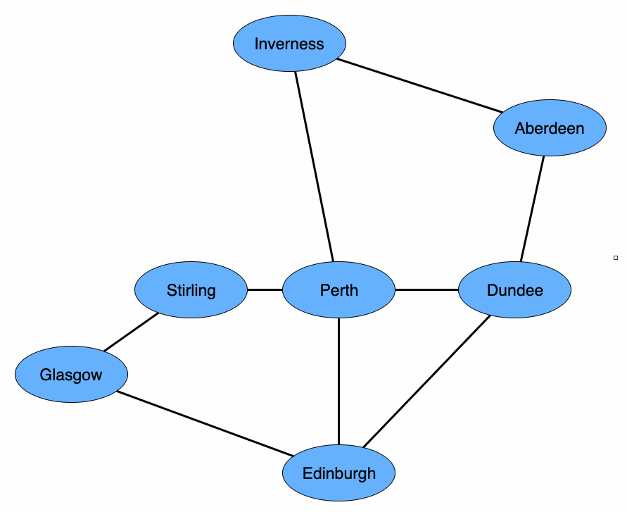

Module 1 - Graphs
Module Overview
Learn about graph data structures and their applications in recommendation systems.
Learning Objectives
- Assemble a graph from provided relationships
- Analyze whether a graph models a provided business problem
- Identify cycles in a provided graph
- Analyze whether a directed or undirected graph models a provided business problem
- Manually perform a breadth-first traversal of a graph to find the shortest path from one node to any node that satisfies a given condition
- Manually perform a depth-first traversal on a graph to perform an operation on each node
- Outline the purpose of a Graph
- Compare and contrast the Graph and Tree data structures
Introduction to Graphs
A graph data structure is constructed of a set of nodes (also called vertices) connected by edges. Unlike trees, edges don't represent a parent-child relationship between nodes. Instead, they connect nodes to create a neighbor relationship.
Key graph concepts:
- Nodes/Vertices: Individual elements in the graph
- Edges: Connections between nodes
- Neighbors: Nodes that are directly connected by an edge
- Path: A sequence of nodes where each pair of nodes in the sequence are neighbors
- Cycle: A path that starts and ends at the same node
- Connected Graph: A graph where all nodes are connected
- Directed Graph: A graph where edges have direction (one-way connections)
- Weighted Graph: A graph where edges have associated weights (costs, distances, etc.)
Graphs are used in many real-world scenarios like:
- Social networks (people as nodes, connections as edges)
- Road maps (cities as nodes, roads as edges)
- Recommendation systems (products as nodes, relationships as edges)
- Workflow diagrams (process steps as nodes, transitions as edges)
Overview
In this lesson, we'll introduce the graph data structure as a way of representing interconnected data. The structure of a graph has many similarities to the tree data structure. There are also important differences. The same is true of the algorithms used to search graph and tree data structures. We'll discuss each of these in this reading.
What is a graph?
Before talking about what a graph is, we want to mention what a graph isn't, at least from a programmer's perspective. For many of us, the concept of a graph includes a horizontal axis, a vertical axis, and data points plotted in the middle. That's not the type of graph we're talking about here. The graph we're talking about is a data structure, like a tree or linked list. It contains information that can be searched and manipulated. A small graph is shown in Figure 1.

Figure 1: Small graph shaped like a bowtie with five nodes, A through E. Six edges connect ABD in a cycle on the left and CBE in a cycle on the right.
Like a tree, a graph data structure is constructed of a set of nodes (also called vertices). In Figure 1 , A through E are the nodes. The edges that connect the nodes are the lines AD, BC, etc. in Figure 1. Unlike trees, edges don't represent a parent-child relationship between nodes. Instead, they connect nodes to create a neighbor relationship. Neighbor nodes are also said to be adjacent. A path is a sequence of nodes where each pair of nodes in the sequence are neighbors (ADBE in Figure 1.) When a path exists between two nodes, the nodes are said to be connected. A path that starts and stops at the same node (BCEB in Figure 1) is a cycle. A tree is actually just a connected graph with no cycles! Sometimes edges are directed, meaning the connection only goes one way. Finally, sometimes edges have an associated weight to represent such things as cost, length, or capacity.
Many of the adjectives we apply to an edge can also be applied to a graph as a whole. If all nodes in a graph are connected, the graph as a whole is a connected graph. Similarly, a graph that contains a cycle is a cyclic graph. A graph with directed edges is a directed graph, while a graph with weighted edges is a weighted graph. Adjectives can also be applied in combination to describe such things as a cyclic, directed, weighted graph.
Examples of graphs
There are many everyday examples of graphs in our lives. A workflow diagram is a tool we use to visualize a business process. As a graph, the nodes are different steps in the process, while the edges indicate how these steps are connected. In Figure 2, you can see our nodes for Customer, Online Order, Phone Order, Payment, Warehouse, and Shipping. Notice how the directed edges show the customer has a choice between placing their order online or using their phone. Both the Online Order and Phone Order nodes have edges to the Payment node with subsequent edges from Payment to Warehouse and Warehouse to Shipping. Finally, the Shipping node has an edge back to the Customer node to restart the process. This workflow is a directed, cyclic graph.

Figure 2: A workflow diagram with nodes for Customer, Online Order, Phone Order, Payment, Warehouse, and Shipping. Directed edges connect the nodes, including an edge from the Shipping node back to Customer to restart the process. This workflow is a directed, cyclic graph.
Perhaps the most common example of a graph many of us interact with daily is the road map that's part of a GPS navigation system. In this graph, shown in Figure 3, cities are nodes and roads are weighted edges where the weight represents a combination of distance between two nodes and the estimated travel time based on speed limit, traffic, road construction, etc.

Figure 3: Road map showing interstate highways within the continental United States.
Another perhaps more abstract example, but still a graph, is a social network application. In this scenario, people are the nodes and connections such as friendship, employers, and schools are the edges. Some edges are explicitly created by people, such as sending/accepting a friend request. Others are made by the application when it discovers two people have the same employer or graduated from the same school. The application can use existing edges to suggest further connections. Have you ever wondered how Facebook suggests your sibling's college roommate's coworker as a possible friend?
Finally, the voice assistant, Alexa, makes extensive use of a graph data structure to respond to voice commands. Most of us are familiar with using an Internet search engine to type a query and then browse the potentially varied results in order to find the exact information we need. In contrast, Alexa replies with what the industry calls a "one-shot answer." In addition to a natural language processing system to interpret questions, Alexa requires a large base of factual knowledge. However, to be useful, there had to be a way of representing how these facts are related. They do this with a knowledge graph, which also looks like a tree. The root node encompasses every fact. The branches to child nodes narrow down the possible facts the child node would include. For example, the top few levels of the knowledge graph/tree might look something like the one shown in Figure 4.

Figure 4: Tree with Everything as the root, Person, Place, and Thing as child nodes of the root, Fictitious and Real as child nodes of Person, Land, Sky, and Water as child nodes of Place, and Animal and Plant as child nodes of Thing.
Another way to think of this tree is as a road map to play the classic game Twenty Questions, where each node is an opportunity to ask a question. Each branch/child represents an answer that leads to more questions.
As shown, Figure 4 looks more like a tree than a graph. In fact, a tree is just a special case of a graph. With just a few additions, this knowledge graph/tree could quickly expand to look more like a graph. For example, the Person nod branches directly to Fictitious or Real. This makes sense, but so would branching directly to Alive or Dead. After determining a person is Real, the next question could be Alive or Dead. Similarly, after determining a person is Alive, the next question could be Fictitious or Real. Without knowing which question might be asked first, all of these branches need to be included and linked to one another, quickly transforming a simple tree into a complex graph.
Visualizing data as a graph
What if you have some data that's not a graph, but kind of feels graph-y? What would it mean for data to be accurately described with the highly technical term, "graph-y"? Well, remember the graph data structure is used to represent interconnected data. So, if it seems as though individual items in your data may somehow be related, it might be useful to visualize the data as a graph. After building a graph, you may find some of the graph algorithms could prove useful in extracting information from your data.
Everybody needs bread
Let's consider Amazon Fresh online grocery shopping and delivery. A graph structure of products can be used to present related or complementary products to a customer as they shop. This helps the customer shop without incessant searching. When a customer views an item, the website shows a list of related items labeled, "Customers Also Shopped For." For example, a customer looks at Folger's Classic Roast coffee on the website. Items other customers shopped for would likely include competing products such as Folger's Breakfast Blend and Maxwell House Original Roast. The list presents the customer with a choice of related products to ponder without having to search for them. It's as if they're in the coffee aisle at the supermarket. Once a customer puts an item in their online shopping cart, ready for purchase, the website recommends complementary items under the heading, "Customers Who Bought This Item Also Bought." Here, the website might recommend coffee filters and coffee creamer. These suggested products might complement or go with the item the customer is already intending to purchase.
Let's consider the second scenario where we have some data representing actual customer purchases. Below is a table of data showing items purchased by five different customers:
| Ana | Carlos | Nikhil | Richard | Shirley |
|---|---|---|---|---|
| Bacon | Tomato Soup | Bologna | Avocado | Peanut Butter |
| Eggs | Cheese | Cheese | Turkey | Honey |
| Bread | Bread | Peanut Butter | Eggs | Bread |
| Grape Jelly | Bread (x2) | |||
| Bread (x2) |
Ana has bacon, eggs, and toast every morning; she needs a loaf of bread. Carlos isn't feeling well, so he's planning to have some tomato soup and a nice grilled cheese sandwich; he needs a loaf of bread. Nikhil can't decide between bologna and cheese or the classic peanut butter and jelly, so he buys both; plus, two loaves of bread. Richard likes avocado toast, turkey and avocado sandwiches, and French toast; he also needs two loaves of bread. Shirley doesn't care much for jelly, so she substitutes honey in the classic peanut butter sandwich; she needs bread. Clearly, everyone needs bread.
A bread-based graph
Using product data to build a graph where each item is a node and an edge between two items indicates the items were part of the same purchase results in the graph shown in Figure 5. There are edges between honey and peanut butter, peanut butter and bread, and honey and bread because those three items appeared in Shirley's purchase. Similarly, there are edges connecting bacon, eggs, and bread because those three items appeared in Ana's purchase. The remaining edges are included due to the purchases of Carlos, Nikhil, and Richard.

Figure 5: Graph of shopping data from table in reading; everybody loves bread. Products listed include honey, peanut butter, grape jelly, bologna, tomato soup, cheese, turkey, avocado, eggs, and bacon. All are connected to bread.
When a customer places any of these food items in their cart , a graph like Figure 5 could direct a website to suggest bread. The website could also suggest peanut butter when a customer puts grape jelly in their cart. However, not all edges make sense. Purchasing bologna doesn't lead to grape jelly for most people! Yet, Nikhil had both of those items in his purchase, so they are connected by an edge. How can we avoid nonsense suggestions? The edges in Figure 5 are not shown with weights. You can see from the table that eggs were purchased with bread by both Ana and Richard. This indicates egg purchases are more common and should get more weight in our graph. The same is true for cheese that was purchased with bread by both Carlos and Nikhil. These more common choices could be encoded by adding weight to these edges. Once edges are weighted, it's likely the edge connecting bologna and grape jelly would not have much weight to it, and that connection would be mostly ignored.
Another possible bit of information we could include in the graph would be time stamps on each item when it's placed in the customer's cart. Time stamps don't make sense in a brick-and-mortar grocery store since the cart arrives at the checkout counter already loaded. At that point, there's no way of knowing when items were placed in the cart. But with online shopping, there could be a time stamp of when items are placed in the cart. Picking up peanut butter first is likely to lead to picking up bread. However, picking up bread isn't likely to lead to picking peanut butter nearly as often. Using graphs filled with the knowledge of thousands of transactions, a clever programmer could figure out a way to put the correct item in front of a customer at just the right time to entice a purchase.
With all of the preceding examples of graphs as motivation, let's dig into the technical side of graphs.
Implementing graphs
Details and code are beyond the scope of this lesson. However, we want to give you a brief conceptual overview of graph implementations. There are two basic graph implementations, the adjacency matrix and the adjacency list. The adjacency matrix uses a two-dimensional array with nodes as the indices along both axes. An entry in the array represents a connection between the node on the horizontal axis and the node on the vertical axis. On the other hand, the adjacency list keeps a linked list of neighbors for each node in the graph.
The trade-off between the two implementations is very similar to a basic trade-off you've encountered many times before, the array list vs. the linked list. Performance of the implementation depends on how the graph is used. For example, whether the graph is dense or sparse also affects your choices. A dense graph has a high number of edges compared to the number of nodes. It's better suited for the adjacency matrix. While a sparse graph has few edges compared to the number of nodes and is better suited for the adjacency list. Additionally, if you find nodes and edges need to be frequently added and removed, then an adjacency matrix will be faster.
Searching a graph
Like trees and lists, a graph's fundamental use is to store data so it can be either searched or traversed. In addition to finding a specific node in the graph, a failed search can also answer an important question about connectivity. Are two nodes connected? Think about searching a road map for driving directions from Seattle to Honolulu. In a weighted graph, the concept of a shortest path adds an interesting dynamic to the search. A bit of extra care is required when searching a graph with cycles, we always want to avoid getting stuck going around and around the same set of nodes.
For now, we'll focus on searching an undirected, unweighted graph. The same basic strategies used with trees also apply here, breadth-first search and depth-first search. Remember the difference between the two lies in how the algorithms choose the next neighbor node as the search progresses. The breadth-first search uses a queue to store a list of neighbor nodes waiting to be searched, while the depth-first search uses a stack. The primary trade-off between the two search strategies remains the potentially large size of the queue in breadth-first search vs. the relatively modest size of the stack in depth-first search. Another difference in searching graphs vs. trees is the choice of a start node instead of always starting with the root. Additionally, you need to avoid getting stuck in a cycle.
Breadth-first search
Unlike searching a tree from the root, the breadth-first search of a graph begins with a start node, which can be any node in the graph From the start node, the search progresses to all of the immediate neighbors of the start node. This is similar to searching a tree where all children of the root are first to be searched. Next, immediate neighbors of the first set of neighbors are searched (i.e., nodes two steps away from the start node.) The search continues to expand equally in all directions, looking at all nodes three steps away from the start node, then four steps away from the start node, etc.
Figure 6 illustrates the progression of the BFS, starting with the green start node E. The first nodes searched are the blue nodes C, D, H and I that are one step from the start node. Then the yellow nodes F, A, and J. And finally, the red nodes B and G. The full progression of the breadth-first search is E, C, D, H, I, F, A, J, B, and G.

Figure 6: Illustration of breadth-first search of a graph; described in detail in the surrounding text.
The nodes within any group having the same color could be searched in any order and this would still be considered a valid breadth-first search. Unfortunately, this leads to a very large number of possible orderings of the search progression. The subscripts on each node give a more precise order to the search. These are the result of a deliberate choice of how neighbor nodes are stored as the algorithm progresses.
Specifically, the breadth-first search algorithm uses a queue to store the list of neighbor nodes waiting to be searched. When adding nodes to this queue, always doing so alphabetically will result in consistent results. Making this choice will allow try exercises to compare answers to a single expected result. Below is the pseudocode with the remaining details of the breadth-first search algorithm:
Put the start node in a queue of neighbor nodes waiting to be searched
While the queue of neighbor nodes is not empty
Remove the next node from queue
If this node is the target, success
If this node has not yet been visited
Mark the node as having been visited
Put all of this nodes's unvisited neighbors in the queue
Queue becomes empty, failureThe following lines show the queue of nodes waiting to be searched each time the loop condition is tested, before the loop body executes. In order to follow the search through the entire graph, assume we're searching for the target value Z, which is not in the graph. The first time the loop condition is tested, the start node E is the only node in the queue and no nodes have yet been visited:
Iteration 0 Queue: E Visited:Inside the loop body, the next node in the queue, E, is removed from the queue. It's not the target and has not yet been visited, so it's marked as visited and its neighbors are added alphabetically to the queue:
Iteration 1 Queue: C D H I Visited: ESince the neighbors were inserted alphabetically, C is at the front of the queue and I is at the back of the queue. During the next iteration of the loop body, C is removed from the front of the queue. It's not the target and has not yet been visited, so it's marked as visited and its unvisited neighbors are added alphabetically to the queue:
Iteration 2 Queue: D H I F Visited: E CSince C's neighbor E has already been visited, it's not placed in the queue of neighbors. During the next three iterations, the remaining original neighbors of the start node are removed from the queue, marked as visited, and their unvisited neighbors are added alphabetically to the queue:
Iteration 3 Queue: H I F A I Visited: E C D
Iteration 4 Queue: I F A I F Visited: E C D H
Iteration 5 Queue: F A I F J Visited: E C D H INotice after iteration 3, the node I is in the queue twice and after iteration 4, the node F is in the queue twice. It may be tempting to try to avoid putting nodes in the queue twice but doing so would require a linear search of the potentially large queue. It's better to test if a node has already been visited when it comes out of the queue.
The next two iterations remove F and A from the queue, add them to the visited list, and put their unvisited neighbors alphabetically in the queue:
Iteration 6 Queue: A I F J B G Visited: E C D H I F
Iteration 7 Queue: I F J B G B Visited: E C D H I F AThe next two iterations remove I and F from the queue. Both I and J have been visited, so the loop proceeds:
Iteration 8 Queue: F J B G B Visited: E C D H I F A
Iteration 9 Queue: J B G B Visited: E C D H I F A The next three iterations remove nodes J, B, and G from the queue, adding each to the visited list:
Iteration 10 Queue: B G B G Visited: E C D H I F A J
Iteration 11 Queue: G B G G Visited: E C D H I F A J B
Iteration 11 Queue: B G G Visited: E C D H I F A J B GThree final iterations empty the queue and the algorithm terminates.
If you'd like to see how a breadth-first search runs, you can play around with how it works on directed graphs by using the visualization here.
Depth-first search
A depth-first search of a graph also begins with a start node, which can be any node in the graph. From the start node, the search proceeds as far as possible down one path by choosing the first neighbor of each node it encounters. Once a node is reached that has no unvisited neighbors, the search backtracks until it finds a node with unvisited neighbors. It then proceeds to follow that node and its neighbors as far as possible, continuing this process until finding the target or exhausting the graph.
Figure 7 illustrates the progression of the DFS, starting with the green start node E. The first nodes searched are the blue nodes, E leading to I, I leading to J, J leading to G, G leading to F, and F leading to H. At this point, H has no unvisited neighbors, so the search must backtrack to F. Here it finds the unvisited neighbor C, after which it must again backtrack to F. The next unvisited neighbor B then leads to A which in turn leads to D, completing the search. The full progression of the depth-first search is E, I, J, G, F, H, C, B, A, and D.

Figure 7: Illustration of Depth-first Search of a graph; described in detail in the surrounding text.
As with the breadth-first and depth-first tree algorithms, the only difference between the breadth-first and depth-first graph algorithms is the use of a stack instead of a queue. Pseudocode for the depth-first search of a graph follows:
Put the start node on a stack of neighbor nodes waiting to be searched
While the stack of neighbor nodes is not empty
Remove the next node from stack
If this node is the target, success
If this node has not yet been visited
Mark the node as having been visited
Put all of this nodes's unvisited neighbors on the stack
Stack becomes empty, failureThe following lines show the stack of nodes waiting to be searched each time the loop condition is tested, before the loop body executes. In order to follow the search through the entire graph, assume we're searching for the target value Z, which is not in the graph. The first time the loop condition is tested, the start node E is the only node on the stack and no nodes have yet been visited:
Iteration 0 Stack: E Visited:Inside the loop body, the next node on the stack, E, is removed from the stack. It's not the target and has not yet been visited, so it's marked as visited and its neighbors are added alphabetically to the stack:
Iteration 1 Stack: C D H I Visited: ESince the neighbors were pushed onto the stack alphabetically, C is at the bottom of the stack and I is at the top of the stack. During the next iteration of the loop body, I will be removed from the top of the stack. It's not the target and has not yet been visited, so it's marked as visited and its unvisited neighbors are pushed alphabetically onto the stack:
Iteration 2 Stack: C D H D J Visited: E IAgain, the neighbors were pushed onto the stack alphabetically, so J is at the top of the stack. The next iteration removes it, marks it as visited, and pushes its unvisited neighbor onto the stack:
Iteration 3 Stack: C D H D G Visited: E I JThree more iterations visit the nodes G, F, and H, each one being popped off the stack on the very next iteration after it's pushed. This use of the stack to store the neighbor nodes to be visited results in following a single path as far as possible, as the depth-first search strategy specifies:
Iteration 4 Stack: C D H D B F Visited: E I J G
Iteration 5 Stack: C D H D B C H Visited: E I J G F
Iteration 6 Stack: C D H D B C Visited: E I J G F HWhen the node H is visited, both of its neighbors have already been visited. At this point, the search backtracks to the second neighbor of F that was pushed onto the stack two iterations previously. This is node C:
Iteration 7 Stack: C D H D B Visited: E I J G F H CAfter the node C is visited, both of its neighbors have already been visited. Again, the search backtracks to the second neighbor of G, which is now on the top of the stack. This is node B, after which is a direct path to nodes A and D.
Iteration 8 Stack: C D H D A Visited: E I J G F H C B
Iteration 9 Stack: C D H D D Visited: E I J G F H C B A
Iteration 10 Stack: C D H D Visited: E I J G F H C B A DAt this point, all of the nodes have been visited. A few more iterations will empty the stack and complete the algorithm.
If you'd like to see how a depth-first search runs, you can play around with how it works on directed graphs by using the visualization here.
Comparing BFS and DFS
Comparison of the breadth-first and depth-first search strategies when applied to graphs is nearly identical to the comparison in the context of trees. Both searches progress by moving from a node to one of its neighbors. Their different strategies for choosing the next neighbor node results in divergent paths through the graph.
As with trees, the primary advantage of a breadth-first search becomes apparent in a graph where multiple nodes satisfy the search condition. The breadth-first search will find the node closest to the start node. Even when there's only one node that satisfies the search criteria, the breadth-first search in a graph always finds the shortest path to that node even when there are multiple ways to get there. The size of the queue needed to store neighbor nodes waiting to be searched is again the main disadvantage, for the same reasons discussed in the tree lesson. Depth-first search in a graph has the same advantage and limitation as it does in a tree. The modest size of the stack is a good thing, but the strategy still has the risk of going a long way down a fruitless path. As with trees, the depth-first traversal is the appropriate choice when every node in the graph must be accessed (e.g., counting them or adding up a total of whatever data each node represents.)
In addition to finding a path from a start node to a target node, BFS and DFS can also be used to answer the basic question of connectivity. If either of these searches finishes without finding the target node, it could be that the target node does not exist or that the target node is in the graph but is not connected to the start node. If you're a network administrator and this situation arises in a graph representing your company's network, it might raise an alarm for a technician to start looking for a bad switch or cut cable.
Advanced graph algorithms
Graphs have proven to be a very useful data structure and as such have been studied extensively. A tremendous amount of detail is beyond the scope of this lesson, but feel free to explore further on your own. For example, think about the benefits of a weighted graph such as a road map, where distance and/or travel time could be a cost associated with each edge. An algorithm cannot only find a path, but it can find the shortest path based on total cost. Edsger Dijkstra conceived an algorithm for accomplishing this task that's so ubiquitous it's simply called Dijkstra's Algorithm.
Of course, not many conversations around the coffee pot about graphs will come and go without someone mentioning the Traveling Salesperson Problem. This problem considers the following question. "Given a list of cities and the distances between each pair of cities, what is the shortest possible route that visits each city and returns to the origin city?" Sounds simple enough, and the brute-force solution of calculating all possible routes is conceptually straightforward. In practice, this sort of O(n!) algorithm becomes unfeasible with as few as 20 cities. Thus, heuristic algorithms that find an approximate solution are often the best we can do. (There are a few nifty buzzwords for you to throw around when the opportunity arises!)
Conclusion
Graphs are an advanced data structure, and there are many algorithms for extracting information from them. Basic knowledge of graphs is useful in recognizing when and why to use them. As with Java's TreeMap class that implements a self-balancing binary search tree and spares us all the nitty-gritty detail, there are packages available for Java that implement a graph data structure and include the most commonly used algorithms. With this lesson under your belt, when someone, somewhere, inevitably compares the difficulty level of a problem to traveling salesperson, you'll be able to nod your head in agreement and know exactly what they're talking about!
Graph Traversal Algorithms
There are two primary methods for traversing (searching) graphs:
Breadth-First Search (BFS)
BFS explores a graph level by level, visiting all immediate neighbors before moving to the next level. It's useful for finding the shortest path between nodes in an unweighted graph.
BFS uses a queue to keep track of nodes to visit:
// Pseudocode for BFS
function BFS(graph, startNode, targetNode) {
let queue = new Queue();
let visited = new Set();
queue.enqueue(startNode);
while (!queue.isEmpty()) {
let currentNode = queue.dequeue();
if (currentNode === targetNode) {
return true; // Found the target
}
if (!visited.has(currentNode)) {
visited.add(currentNode);
for (let neighbor of graph.getNeighbors(currentNode)) {
if (!visited.has(neighbor)) {
queue.enqueue(neighbor);
}
}
}
}
return false; // Target not found
}
Depth-First Search (DFS)
DFS explores as far as possible along each branch before backtracking. It's often implemented using recursion or a stack.
DFS implementation using recursion:
// Pseudocode for DFS (recursive)
function DFS(graph, currentNode, targetNode, visited = new Set()) {
if (currentNode === targetNode) {
return true;
}
visited.add(currentNode);
for (let neighbor of graph.getNeighbors(currentNode)) {
if (!visited.has(neighbor)) {
if (DFS(graph, neighbor, targetNode, visited)) {
return true;
}
}
}
return false;
}
Building a Simple Graph in Java
Here's a simple example of how you might implement a graph in Java:
import java.util.*;
// A simple undirected graph implementation
public class Graph {
private Map> adjacencyList;
public Graph() {
adjacencyList = new HashMap<>();
}
// Add a vertex to the graph
public void addVertex(String vertex) {
if (!adjacencyList.containsKey(vertex)) {
adjacencyList.put(vertex, new ArrayList<>());
}
}
// Add an edge between two vertices
public void addEdge(String vertex1, String vertex2) {
// Ensure both vertices exist
addVertex(vertex1);
addVertex(vertex2);
// Add the connection in both directions (undirected graph)
adjacencyList.get(vertex1).add(vertex2);
adjacencyList.get(vertex2).add(vertex1);
}
// Get all neighbors of a vertex
public List getNeighbors(String vertex) {
return adjacencyList.getOrDefault(vertex, new ArrayList<>());
}
// Check if there's an edge between two vertices
public boolean hasEdge(String vertex1, String vertex2) {
if (!adjacencyList.containsKey(vertex1)) return false;
return adjacencyList.get(vertex1).contains(vertex2);
}
// Print the graph structure
public void printGraph() {
for (String vertex : adjacencyList.keySet()) {
System.out.print(vertex + ": ");
for (String neighbor : adjacencyList.get(vertex)) {
System.out.print(neighbor + " ");
}
System.out.println();
}
}
}
Guided Project
Introduction
In this activity you will work together to explore an example graph to practice analyzing the more theoretical aspects of this topics.
Phase 1: Choo Choo! A Train Network as a Graph
Consider the following list of connected train stations:
- Aberdeen : Dundee
- Aberdeen : Inverness
- Dundee : Edinburgh
- Dundee : Perth
- Edinburgh : Glasgow
- Edinburgh : Perth
- Glasgow : Stirling
- Inverness : Perth
- Perth : Stirling
This list can also be represented as the following undirected graph:
Discussion Questions:
- Why have we chosen to model this train network with an undirected graph?
- What is the shortest path from Aberdeen to Edinburgh?
- What is the longest path from Aberdeen to Edinburgh?
- If your goal was to visit all the stations in a depth-first search starting from Glasgow, what is one possible path? (Remember that when you traverse a graph, you should not revisit nodes you have already encountered)
- Imagine you are in charge of National Rail's Scottish routes, and you want to reduce time wasted turning engines around at the end of routes. What are all of the possible "loops" (graph cycles) on which you could run trains?
Mastery Task 3: Ads don't grow on trees (or do they?)
In Mastery Task 1, we updated AdvertisementSelectionLogic to randomly show an advertisement from only the ads that a customer is eligible for. We did this to gather some initial data on how often customers in certain targeting groups would click the ads, and we have updated the targeting group data (using the UpdateTargetingGroup operation) with the latest click through rates. Now, the product team would like to update the advertisement selection logic to select the eligible ad with the highest click through rate, instead of just a random eligible ad. If we're going to show a customer an ad, let's make it the one that they're most likely to click on!
Update AdvertisementSelectionLogic so that selectAdvertisement returns the ad that the customer is eligible for with the highest click through rate. Use a TreeMap to help sort the eligible ads by their click through rate. You'll need the TreeMap to use a Comparator that sorts the TargetingGroups by click through rate from highest to lowest. We encourage you to look at TreeMap's and Comparator's Javadocs to see what provided methods can help you implement this!
Remember that a piece of ad content can have multiple TargetingGroups (each with its own click through rate) and a customer can be part of multiple targeting groups for a single piece of ad content. That means, when evaluating targeting groups for an ad, we should be considering the eligible targeting group with the highest click through rate. For example, let's say we have an ad with two targeting groups: one that includes customers that bought logic books with a 0.15 click through rate and another that includes customers that have bought technical books with a 0.30 click through rate. For a customer that has bought both technical books AND logic books, we should use the targeting group with the 0.30 click through rate when sorting through the ads, since it has the higher click through rate.
Exit Checklist:
- You've updated AdvertisementSelectionLogic to use a TreeMap to help select an eligible ad with the highest click through rate.
- You've added/updated unit tests for your changes
- Running the gradle command ./gradlew -q clean :test --tests "com.tct.mastery.task3.*" passes.
Additional Resources
Study Tips
- Practice implementing both BFS and DFS
- Draw graphs on paper and trace the algorithms step by step
- Consider edge cases: disconnected graphs, cycles, etc.
- Implement a simple recommendation system using graphs